Grußwort des Oberbürgermeisters
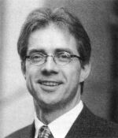
Hermann-Josef Pelgrim
Oberbürgermeister
Der TSV Hessental kann in diesem Jahr sein 75-jähriges Bestehen feiern. Dazu darf ich allen Verantwortlichen, Mitgliedern und Freunden des TSV die herzlichsten Grüße und Wünsche des Gemeinderats und der Stadtverwaltung überbringen. Ich danke allen, die den Verein über Jahre und Jahrzehnte unterstützt und begleitet haben.
Im Frühjahr 1923 wurde von einer kleinen Zahl sportbegeisterter Menschen eine Turnabteilung ins Leben gerufen, im Herbst desselben Jahres erhielt der Verein den Namen Arbeiterturnverein Jahn Hessental. Nach dem zweiten Weltkrieg wurde aus dem ATV Jahn der TSV Hessental geboren. Aus diesem Kreis von Idealisten hat sich der Verein im Laufe der Jahrzehnte zu einer leistungsstarken Sportgemeinschaft entwickelt.
Heute zählt der Verein über 600 Mitglieder und hat ein vielseitiges Sportangebot. Einen ganz wichtigen Beitrag leistet der TSV in der Jugendarbeit. Mehr als 1/3 aller Mitglieder sind Jugendliche.
Der Dank der Stadt Schwäbisch Hall gebührt all den Männern und Frauen, die im Laufe der 75-jährigen Vereinsgeschichte dem Verein sein Gepräge gaben, um die Geschichte des TSV zu lenken.
Für die Zukunft wünsche ich eine gedeihliche Vereinsarbeit und ein kameradschaftliches Miteinander, zum sportlichen Erfolg auch das notwendige Quäntchen Glück.
Grußwort des 1. Vorsitzenden
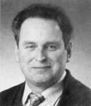
Claus Unser
1. Vorsitzender
TSV Hessental
Kurz vor der Jahrtausendwende darf unser Verein TSV Hessental sein 75-jähriges Bestehen feiern.
Als Friedrich Markus im Jahr 1947 die Leitung unseres Vereins übernahm, erblickte ich gerade das Licht der Welt. Dass unser Verein bis zum heutigen Tag Bestand hat und Anerkennung genießt, ist nicht zuletzt meinen zehn Vorgängern zu verdanken. In Anerkennung der Verdienste dieser Männer für den TSV wollen wir ihrer in Dank und Anerkennung gedenken.
Dank sage ich auch dem Ehrenvorsitzenden Erich Brucker und unserem zweiten Vorsitzenden Walter Dierolf, die mir in den vergangenen Jahren in jeder Situation mit Rat und Tat zur Seite gestanden sind.
Wenn ich die letzten sechs Jahre Revue passieren lasse, so verstärkt sich mein Eindruck, dass die Mitglieder des TSV zu einer großen Familie zusammengewachsen sind. Das „Wir-Gefühl“ in unserem Verein hat zusehends einen hohen Stellenwert bekommen, einerlei, ob sich unsere Abteilungen gerade auf einem sportlichen Hoch oder Tief befinden. Gerade das letzte Jahr hat deutlich gemacht, dass der TSV in sich geschlossen in der Lage ist, Probleme zu bewältigen und auch Erfolge zu feiern.
Zu unserem 75-jährigen Jubiläum wird der TSV sowohl sein Vereinsheim beachtlich erweitern, als auch einen weiteren Trainingsplatz schaffen, beides dient der Betreuung unserer Jugend.
Für die finanzielle und ideelle Unterstützung in dieser Sache darf ich Herrn Oberbürgermeister Pelgrim mit seiner Verwaltung sowie auch meinen Damen und Herren Stadtratskollegen aufrichtigen, verbindlichen Dank sagen.
Allen unseren Mitgliedern danke ich für ihre Treue zu unserem Verein, verbunden mit dem Wunsch, auch in den nächsten Jahren und Jahrzehnten die TSV-Familie zu erhalten und zu fördern.
Vereinschronik
Im Frühjahr 1923 trafen sich einige Mitglieder der SPD-Ortsgruppe Schwäbisch Hall im Gasthof „Zur Krone“ in Hessental. Ihr Ziel war es, einen Rahmen für die Erhaltung der Gesundheit, insbesondere die der Jugend zu schaffen. An diesem Abend wurde eine Turnabteilung ins Leben gerufen. Die Betreuung der Abteilung lag bei der SPD-Ortsgruppe Schwäbisch Hall. Die Turnabende wurden im Garten der Gaststätte „Zur Eisenbahn“ abgehalten.
Im Herbst wurde der „Arbeiterturnverein Jahn Hessental“ gegründet. Erster Vorsitzender wurde damals Karl Walter. 1929 kam eine Fußball-Abteilung hinzu. Das erste Spiel fand auf dem „Ghagbuckel“ statt. Später wurde dort, wo heute das „Bistro“ steht, eine bessere Wiese gepachtet. Durch „verirrte“ Bälle kam es immer wieder zu Streitigkeiten mit den Anliegern. Im Rahmen der „Gleichschaltung“ der Turn- und Sportvereine im Jahre 1933 wurde der Verein aufgelöst.
Nach Kriegsende kam es am 22. Januar 1947 zur Wiedergründung. Im Gasthaus „Zur Krone“ fasste man den Beschluss, den Verein unter dem Namen „Turn- und Sportverein Hessental“ mit den Farben rot und weiß wieder aufleben zu lassen. 1. Vorsitzender wurde Fritz Markus. Die folgenden Jahre standen voll im Zeichen des Fußballsports. Erst später kamen andere Sportarten hinzu. Eine zeitlang vertrat sogar ein Spielmannszug die Farben des TSV Hessental. Von 1952 bis 1970 gab es eine Schützenabteilung, die dann mit dem Schützenverein Sulzdorf fusionierte.
1964 wurde der heutige Sportplatz eingeweiht. Im selben Jahr wird auch die Turnhalle der Hessentaler Schule fertiggestellt, die seither dem TSV Hessental zur Verfügung steht. 1967 wird das Vereinsheim durch einen Sturm „vom Winde verweht“. Bis zur Fertigstellung des neuen Vereinsheims im Jahre 1973 stellte die Löwenbrauerei eine Baracke als Umkleideraum zur Verfügung.


1976 löste Erich Brucker Gottfried Müller nach 15 Jahren als 1. Vorsitzenden ab und stand bis 1989 an der Spitze des TSV. Beide leisteten Enormes in diesen insgesamt achtundzwanzig Jahren für den Verein. Beide waren bzw. sind Ehrenvorsitzende des TSV Hessental.
Ende der 70er Jahre hatte die TT-Abteilung mit der Ausrichtung der Württembergischen Jugendmeisterschaften und einem Schaukampf mit dem damaligen Weltmeister im Tischtennis Dragutin Surbek zwei absolute Höhepunkte in ihrer Abteilungsgeschichte.
1977 erschien erstmals der „Sport-Spiegel“ die neue Vereinszeitung. Hier konnte sich jeder regelmäßig über das Vereinsleben und die Erfolge oder auch Misserfolge der verschiedenen Abteilungen informieren. Gerd Liebchen war dreizehn Jahre Chefredakteur. 1990 übernimmt Wolfgang Kurz diese Aufgabe. Der „Sport-Spiegel“ wurde schließlich Ende 1995 durch das HESTELE abgelöst.
Im Mai 1981 wurde eine weitere Abteilung ins Leben gerufen, die Breitensport Abteilung. Hier konnte sich jeder, ob jung oder alt, aktiv betätigen, ohne Leistungsdruck.
Sportlich sah es in den 80-er Jahren für die Fußballer nicht allzu gut aus. Immer wieder konnte man den Abstieg erst in allerletzter Minute abwenden. 1987 jedoch war der Abstieg besiegelt. Das Spiel im Mai diesen Jahres gegen Michelfeld bleibt vielen unvergessen. Nach Tumulten auf dem Spielfeld und unter den Zuschauern kam es zum Spielabbruch. Zum Schluss musste gar noch die Polizei anrücken, um die Gemüter zu beruhigen. 1991 gelang den Aktiven der Wiederaufstieg.
Ganz anders sah es sportlich bei der TT-Abteilung aus. Bis zu fünfzehn Mannschaften hatte man im Spielbetrieb, einige spielten in den höchsten Klassen. Vor allem Steffen Krämer spielte in der Württembergischen Elite mit. In dieser Zeit konnten einige Mannschaftsmeisterschaften gefeiert werden. Auch die Jugend-Fußballer konnten zwei Meistertitel bejubeln. 1985 schaffte die A-Jugend den Aufstieg in die Bezirksklasse, nachdem sie mit 40:0 Punkten Meister der Leistungsklasse wurde. Ein Jahr später belegten die C-Jugendlichen den 1. Platz in der Leistungsklasse.
1989 gab der 1. Vorsitzende Erich Brucker sein Amt ab, Ernst Häcker wurde sein Nachfolger. 1992 kam es wieder zum Amtswechsel. Claus Unser übernimmt das Ruder und leistet seitdem erfolgreiche Arbeit zum Wohle des Vereins.
1993 wurde die bis heute letzte Abteilung gegründet, die Seniorengruppe unter der Leitung von Erhard Klingler.
Am 16. Juli 1996 kam die traurige Nachricht vom Tode unseres Ehrenvorsitzenden Gottfried Müller. In seiner 15-jährigen Amtszeit setzte er alles daran, den Verein nach vorne zu bringen und zu dem zu machen, was er heute ist.
Letztes Jahr machte vor allem die Fußball-Abteilung wieder Schlagzeilen. Am 5.Juni 1997 berichtete das HALLER TAGBLATT „Hessentals Fußballern droht der Abstieg“. Nach Beendigung der Runde stellt sich heraus, dass man einen nicht spielberechtigten Spieler eingesetzt hatte. Die Fußball-Aktiven mussten in die Kreisliga B absteigen.
Wenn von der Geschichte des TSV berichtet wird, dürfen die alljährlichen Winterfeiern nicht vergessen werden. Jedes Jahr Anfang Januar treffen sich die Mitglieder in der Turnhalle. Hier kann man einige gesellige Stunden unter Freunden genießen und die „Aktiven“ auf der Bühne bewundern oder auch belächeln. Diese Feiern sind absolute Höhepunkte im Vereinsleben und nicht wegzudenken. Vor allem die TSV Gewächse „Fröhlich und Schön“ sorgen hier mit ihrem „treffenden“ Humor schon seit Jahren für Erheiterung.


Vom 18. bis 19. Juni 1998 wird der TSV Hessental sein 75-jähriges Bestehen mit vielen Höhepunkten feiern. Allen Verantwortlichen und Helfern sei an dieser Stelle schon gedankt für Ihren Einsatz, um zum Gelingen unseres Jubiläums beizutragen.
Fußball – Aktiv

Der Spielbetrieb der Fußballabteilung nach der Wiedergründung begann in der B-Klasse. Gleich im ersten Spieljahr konnte die Meisterschaft errungen und damit der Aufstieg in die A-Klasse geschafft werden. Dort blieb der TSV auch mit einer Unterbrechung im Jahre 1956 bis zur Spielrunde 1970/71. Was 1956/57 möglich war, nämlich ein Jahr nach dem Abstieg wieder „da“ zu sein, konnte leider nicht wiederholt werden. Natürlich hofften alle, den angestammten Platz in der A-Klasse wieder zu erreichen.
In der A-Klasse wurde mit wechselndem Erfolg gespielt. Oft war der TSV mit vorn dabei, wie in den Spieljahren 1962/63 und 1968/69, in denen der 3. und 2. Platz erkämpft wurde. Meistens mischte die 1. Mannschaft in der „Mitte“ mit. Spannend wie Spiele um die Meisterschaft waren die Begegnungen, bei denen es um „Sein oder Nichtsein“, um den Klassenerhalt ging.
Besonders erfolgreich waren unsere Fußballer 1968/69 und 1969/70. In der Pokalrunde 1968/69 wurden sie Pokalmeister der A-Klasse und auch des Bezirks Hohenlohe. Nachdem der Pokalsieg in der A-Klasse durch ein 4:2 gegen den VfR Altenmünster sicher nach Hessental gebracht worden war, kam es am 5. April 1969 auf den Kocherwiesen in Steinbach zur Entscheidung um den Bezirkspokal. Gegner war der TSV Michelbach, Pokalmeister der B- und C-Klassen. Nach einem ausgeglichenen Spiel, das bis zur 84. Minute 1:1 stand, nachdem Keller das Führungstor und Aldinger den Ausgleich für Michelbach erzielt hatten, brachte Frey den entscheidenden und viel bejubelten zweiten Treffer im Tor der Michelbacher unter.

In der folgenden Spielrunde sah es zunächst so aus, als sollten sich die Pokalsiege wiederholen. Am 1. November 1969 konnte in Crailsheim gegen die SpVgg Hengstfeld die Pokalmeisterschaft der A-Klasse gewonnen werden. Mit dem dabei erzielten 3:1-Sieg bestanden alle Hoffnungen, den Bezirkspokal zum zweitenmal mit nach Hause bringen zu können. Beim Entscheidungsspiel in Obersontheim gegen den TSV Ilshofen fehlte ein bißchen das Glück. Trotz überlegen geführtem Spiel ging mit 0:1 der Pokal nach Ilshofen. Die Abgänge und Ausfälle so guter Spieler wie Keller, Ludwig und Gierok machten sich schon bemerkbar.
Die Spielrunde 1970/71 brachte dann den Abstieg in der B-Klasse. Was viele schon nach dem Abschneiden in der vorangegangenen Spielrunde befürchtet hatten, trat leider ein. Die Spielerabgänge waren nicht zu verkraften. Von Anfang an bis zum Ende der Runde, auch eine Einmaligkeit, trugen die Hessentaler die „Rote Laterne“ – Danach wurde prophezeit, dass auch die B-Klasse noch eine Schuhnummer zu groß für den TSV sei. Diese Unkenrufe haben sich nicht bewahrheitet.
Die Fußballer bestritten in dieser Zeit nicht nur ihre Pflichtspiele. Es kam vielmehr auch zu interessanten Freundschaftstreffen. So wurde zweimal nach Langres in Frankreich gefahren, 1960 und 1961. Auch der Gegenbesuch blieb nicht aus. Auf Initiative des damaligen Abteilungsleiters Walter Bauer kam es 1963 erstmals zur Austragung der Stadtmeisterschaft, die seitdem jedes Jahr einen Höhepunkt im Sportleben von Schwäbisch Hall darstellt. Zwei sportliche Höhepunkte waren mit Sicherheit die Freundschaftsspiele gegen den VfB Stuttgart, die am 6. September 1967 und am 30. Mai 1968 ausgetragen wurden. Natürlich gingen beide Begegnungen für den VfB aus, beide male zweistellig, was jedoch weniger wichtig war.
Ab den 70-ern spielten unsere Fußballer immer nur in den beiden untersten Spielklassen. Es war keiner Mannschaft gelungen, einmal in die Bezirksklasse (frühere A-Klasse) aufzusteigen.
Nach dem Spieljahr 1973/74 stiegen die Fußballer in die C-Klasse ab. Doch bereits zwei Jahre später wurde dieses Missgeschick wieder korrigiert. Im Spieljahr 1975/76 schafften wir den Wiederaufstieg in die B-Klasse. Lobenswert ist hierbei, die geleistete Arbeit des damaligen Abteilungsleiters Eberhard Huter zu erwähnen. Mit vollem Engagement setzte er sich immer wieder für seine Fußballer ein. In dieser Zeit wurden ganz tolle Ausflüge durchgeführt, vor allem nach Kirchbichl in Österreich. Allen Teilnehmern sind die Abende in der Tenne beim „Schroll“ noch in guter Erinnerung, da es dort immer hoch herging.
In den Folgejahren wurden unsere Kicker vom Erfolg nicht gerade verwöhnt. Im Gegenteil, man befand sich des öfteren bedrohlich im Tabellenkeller der B-Klasse. Trotz alledem holte man sich am 18. November 1978 den Titel des Stadtmeisters.

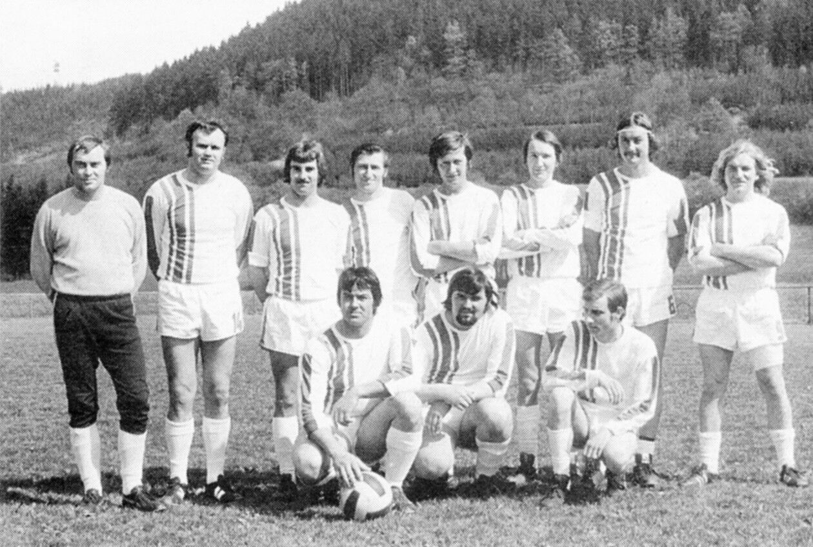
Dierolf, Miemcyk, Ritter, Rieger, Babiej, Kurz W., Balk, Greiner, Franz H., Stapf, Speer

Gaschler, Weißbarth, Baumann W., Stapf, Kantlehner, Baumann K., Wohlmuth, Hornung, Otterbach, Bonz, Walter B., Kranz, Fuchs
Sehr spannend wurde es in der Saison 1982/83. Erst am letzten Spieltag schaffte man durch einen 3:0-Sieg gegen den ASV Scheppach den Verbleib in der Kreisliga A1 (die Spielklassen wurden zwischenzeitlich umbenannt).
Auch in den Jahren 1984 bis 1986 konnten die Fußballer immer nur hintere Tabellenplätze zum Saisonende belegen. Nach der Saison 1986/87 kam dann doch wieder der Abstieg in die Kreisliga B. Am 16. April 1987 versetzte uns der Nachbar TSV Michelbach/Bilz bei der 2:3-Heimniederlage den Todesstoß. Leider gelang der sofortige Wiederaufstieg 1988 nicht.
In den Spieljahren 1988/89, 89/90 und 90/91 machte dann unsere 2. Mannschaft von sich reden. Es gelang den Jungs dreimal in Folge die Reserve-Meisterschaft in der Kreisliga B zu erringen. Einen großen Anteil daran hatte sicherlich auch der damalige Abteilungsleiter Herbert Lamparter, der es hervorragend verstand, durch vielerlei Aktivitäten die Kameradschaft der Fußballabteilung zu fördern. Unvergesslich sind hierbei sicherlich die Ausflüge unter seiner Leitung nach Harkany (Ungarn), Lorret de Mar (Spanien) oder Rimini (Italien), bei denen wir tolle Tage und heiße Nächte erlebten.
Am letzten Spieltag der Saison 1989/90 unterlagen wir in Gailenkirchen in einem regelrechten Endspiel mit 1:0 und überließen somit dem Gegner den Aufstieg in die Kreisliga A.
Doch nur ein Jahr später, 1990/91 war es dann geschafft. Endlich der Aufstieg in die Kreisliga A. Wie bereits im Vorjahr musste der letzte Spieltag entscheiden, als wir zum Tabellenzweiten nach Untermünkheim reisten. Doch diesmal gewannen wir mit 1:0 (Torschütze war Stefan Seyboth) vor der Traumkulisse von über achthundert Zuschauern. Das war der Beginn einer langen feuchtfröhlichen Siegesfeier. Vater des Erfolgs war sicherlich Trainer „Melle“ Weis.
In den folgenden fünf Jahren bis 1996 spielten wir immer eine gute Rolle in der Kreisliga A. Es konnten regelmäßig Plazierungen im vorderen Mittelfeld erreicht werden und dies, obwohl immer wieder Leistungsträger den Verein verließen oder aber ihre fußballerische Laufbahn beendeten. Das trotz dieser Abgänge jedes Jahr ein schlagkräftiges Team auf die Füße gestellt werden konnte, ist ein großer Verdienst des derzeitigen Abteilungsleiters Kurt Schust, der dieses Amt seit der Saison 1992/93 übernommen hat.
Erwähnenswert ist der Stadtmeistertitel vom 28. Januar 1993, als wir ungeschlagen blieben und gegen die höherklassigen Mannschaften der Spfr. Schwäbisch Hall und des SSV Schwäbisch Hall hervorragende Spiele zeigten und deutlich gewannen.
Auch außerhalb des Fußballsports waren unsere Kicker sehr aktiv. So war man in den letzten Jahren zweimal in Österreich beim Skifahren und hatte einen Riesengaudi miteinander.
Nach dem Saisonabschluss im Juni 1997 traf es uns plötzlich wie aus heiterem Himmel. Unsere Fußballabteilung stand wochenlang in den Schlagzeilen des Haller Tagblattes, jedoch in negativer Hinsicht.
Es stellte sich heraus, dass der gelegentlich in der 1. Mannschaft eingesetzte Spieler Raul Sa Machada bereits in seinem Heimatland Portugal als Jugendspieler tätig war und auch einen Jugendspielerpass besaß. Dies war unser Verhängnis. Der Württembergische Fußballverband kannte keine Gnade, zog uns elf Punkte ab und somit standen wir auf einem Abstiegsplatz. Die bittere Folge war leider der „Zwangsabstieg in die Kreisliga B“
Die Mannschaft jedoch zeigte Charakter, blieb zusammen und ist auf dem besten Wege nach der Saison 1997/98 den sofortigen Wiederaufstieg zu schaffen. Denn nachdem bereits die Herbstmeisterschaft geholt wurde, stehen wir wenige Spieltage vor Schluss immer noch an erster Stelle und steuern Kurs in Richtung Kreisliga A.
Ein besonderes Dankeschön gilt vor allem den Sponsoren, die unsere Fußballabteilung in den letzten Jahren in irgendeiner Form unterstützt haben. Ein großes Lob der Fußballer geht auch an ihre treuen Fans, die die Mannschaften schon über Jahre hinweg lautstark anfeuern. Der TSV Hessental kann wirklich stolz darauf sein, dass seine Zuschauer in guten wie in schlechten Zeiten so zahlreich erschienen sind. Manche höherklassige Mannschaft wäre froh, wenn sie solche Zuschauerzahlen hätte. Wir hoffen natürlich, dass dies auch in Zukunft so bleiben wird.
Nach langer Durststrecke sind wir in den nächsten Jahren wieder in der Lage, zahlreiche aus der Jugend kommende Spieler in den Aktivenbereich übernehmen zu können. Es kann somit hoffnungsvoll in die Zukunft des Hessentaler Fußballsports gesehen werden.

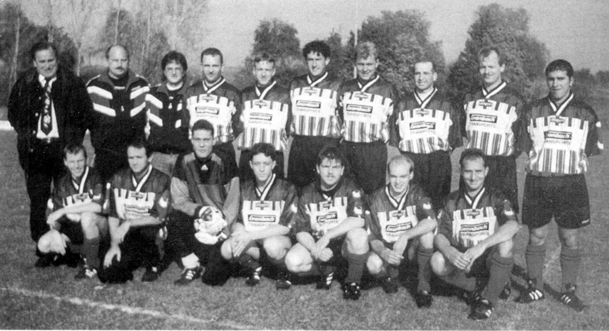
Vorstand Claus Unser, Abteilungsleiter Kurt Schust, Trainer Berthold Hutter, Stefan Erdmann, Timo Lauknemann, Andreas Schaile, Markus Gerstenberg, Bernd Rieger, Michael Frey, Fernando Castro, Roman Kritsch, Djaro Vajaklija, Armin Hanselmann, Holger Malich, Andreas Deeg, Markus Metzger, Oliver Hamann

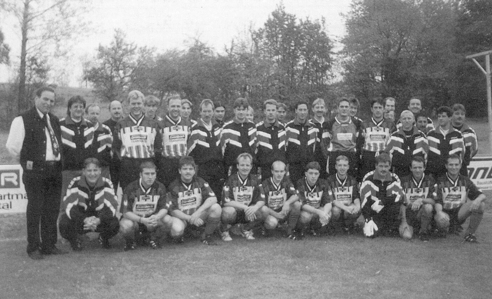
Fußball – Jugend
Sofort mit der Wiedergründung im Januar 1947 wurde eine Jugendabteilung ins Leben gerufen, um den Nachwuchs für die aktiven Mannschaften sicherzustellen. Genau wie bei den Aktiven konnte die Jugendmannschaft gleich im ersten Jahr auf Kreisebene die Meisterschaft erringen. Höhere Meisterehren gelangen nicht, denn am 9. April 1948 ging das erste Vorentscheidungsspiel gegen die TSG Öhringen mit 0:2 verloren. Es war dennoch ein schöner Erfolg, den die damalige Jugendmannschaft mit den Spielern Bröllochs, Sperr, Dietrich, Hamleh, Sommer, Schelle, Schust, Greiner und Schwenger verzeichnen konnte.
Es dauerte dann Jahre, ehe die Hessentaler Jugend aufhorchen ließ. Trotzdem wurde immer eifrig gespielt und ständig waren drei Mannschaften im Wettbewerb. Unter der Leitung ihres langjährigen Jugendleiters Roland Heckelmann wurden dann einmalige Erfolge erzielt, an die sich die Hessentaler gern und ihre Konkurrenten mit Respekt erinnern.
Im Spieljahr 1957/58 stellte die A-Jugend den Kreismeister, die B-Jugend wurde Kreis- und Bezirksmeister. Nicht weniger erfolgreich war die Hessentaler Jugend im Spieljahr 1959/60. Unsere A-Jugend warf die A1-Jugend der Spfr. Schwäbisch Hall mit 4:1 aus dem Rennen und wurde Kreismeister. Durch einen 1:0-Sieg über den TSV Künzelsau, dem Kreismeister der Gruppe II, wurde der Bezirksmeister geschafft. Fünf Kreismeister- und drei Bezirksmeisterwimpel konnte damit unsere A-Jugend ihr eigen nennen. Diese stolze Bilanz wird nicht dadurch geschmälert, dass schon im ersten Spiel um die Württembergische Jugendmeisterschaft eine Niederlage eingesteckt werden musste. Der Gegner war die TSG Giengen.

Diese Erfolge stellten sich nicht von ungefähr ein. Eifriges und fachgerechtes Training waren dazu ebenso notwendig wie ein ausgeprägter Kameradschaftsgeist. Ohne diesen geht es einfach nicht. Durch die unermüdliche Betreuung der Jugend durch ihren Leiter und seinen Helfern war er geweckt und aufrecht erhalten worden. Zwischendurch wurden viele Freundschaftsspiele ausgetragen u. a. gegen Stuttgarter, Feuerbacher, Ludwigsburger und Heilbronner Vereine. Höhepunkte waren die Freundschaftsspiele gegen eine englische Schülermannschaft und das der A-Jugend in Langres/Frankreich, die beide gewonnen werden konnten.
Danach spielten und hielten sich die Jugendmannschaften immer an guter Stelle in den Kreisstaffeln und die A-Jugend kam als Meister ihrer Kreisstaffel in die des Bezirks, wo sie lange mithalten konnte. Erfreulich war das Anwachsen der Zahl von Jugendlichen, die Fußball spielen wollten. So konnte in jeder Alterstufe eine oder sogar zwei Mannschaften gestellt werden. Allein in der Gruppe der 8- bis 12-Jährigen waren es fünf Mannschaften im Wettbewerb.
1972 wurde die 1. Mannschaft der B-Jugend Meister in ihrer Staffel. Im Jahre 1973, dem 50-jährigen Bestehen des TSV, richtete Hessental die offenen Stadtmeisterschaften für die Jugend aus. Die B1- und C-Jugend gewannen damals den Wettbewerb.
Der Besuch des Bundesligaspielers Hannes Löhr vom 1. FC Köln im Jahre 1973 ist allen noch in guter Erinnerung.
Nach gelungener 50-Jahrfeier mit Einweihung des neuen Vereinsheimes ging das Leben in der Jugendabteilung wieder seinen gewohnten Gang. Die B-Jugend war im gleichen Jahr Bezirksmeister und spielte gegen die Stuttgarter Kickers um die württembergische Meisterschaft. Ein Jahr später gelingen den Jugendmannschaften nochmals hervorragende Plazierungen. Die D-Jugend wird Bezirksmeister und die C-Jugend Staffelsieger. Erst 1978 kann dann die A-Jugend mit Erringen des Stadtmeister wieder einen Titel für den TSV verbuchen.
In den Jahren bis 1983 hatte die Jugendabteilung über hundert Jugendliche zu betreuen. Fünf Mannschaften spielten in der Leistungsklasse. Den größten Erfolg erzielte die D-Jugend, sie kam bis in die Vorrunde der Württembergischen Meisterschaft.
1985 erreicht die A-Jugend ohne Punktverlust den Aufstieg in die Bezirksklasse. Danach beginnt für die Jugendabteilung eine schwere Zeit. Bedingt durch geburtenschwache Jahrgänge, großes Angebot von verschiedenen Sportarten (Tennis, Basketball usw.) fehlte der Nachwuchs und es mussten Spielergemeinschaften mit den Nachbarvereinen gebildet werden. Einziger Lichtblick in dieser Zeit war die E-Jugend. Sie wurde Bezirksmeister und konnte bis zur Endrunde der WFV-Hallenmeisterschaften vorstoßen.
Erst 1994 geht es aufwärts mit der Anzahl der Jugendspieler, zwei Jahre später spielten wieder einhundertzwanzig Jugendliche beim TSV. Eine Meisterschaft konnte von der B- und C-Jugend erkämpft werden und die A-Jugend schaffte eine Saison später den Aufstieg in die Leistungsklasse.
1998 wurde die A-Jugend ungeschlagener Stadtmeister und unsere A-, C- und D-Jugend hat diese Saison noch gute Meisterschaftschancen. Erfreulich ist auch, dass die Fußballjugend immer mehr Mitglieder verzeichnet und zur Zeit ca. einhundertsechzig Spieler betreut werden. Das ist natürlich mit sehr viel Zeitaufwand und Arbeit für unsere Trainer und Betreuer verbunden. Ihnen gilt für ihre oft nicht einfache Arbeit große Anerkennung. Ohne seine Jugend würde der Verein bald seine Grundlage verlieren. Aber auch die Kinder und Jugendlichen lernen durch den Sport im Verein Kameradschaft, Zusammenhalt und besseres soziales Verhalten im Umgang mit anderen.
Auch die Geselligkeit wird in der Jugendabteilung sehr groß geschrieben, ob Wandertage, Zeltlager, Weihnachtsfeiern, Grillfeste und Kameradschaftsabende, es ist immer etwas geboten für die Jugend. Besonderer Dank gilt auch den vielen Helfern, Sponsoren und Gönnern, die uns immer tatkräftig unterstützen.
Für immer Abschied nehmen mussten wir von unserem ehemaligen Jugendleitern Gerhard Gerstenberg, Walter Frank und Julius Hornung. Die TSV-Jugendabteilung wird sie in guter Erinnerung behalten.
Die Teams im Jubiläumsjahr

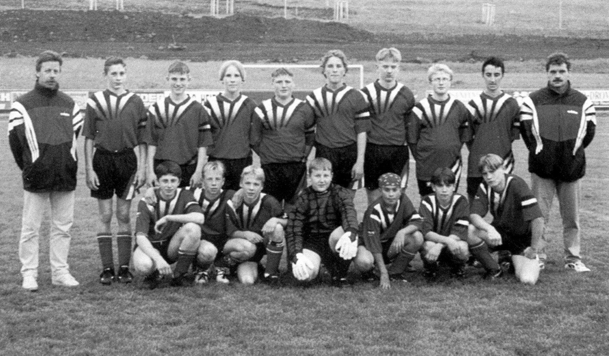
Trainer Klaus Hornung, Eugen Albert, Fabian Kerscher, Andreas Ohm, Christian Dreyer, Konstantin Ohm, Rafael Kempa, Wladislaw Alles, Ismael Kaya, Betreuer Michael Frey, Leonid Pochorovski, Frank Schust, Roman Brandner, Eugen Frescher, Kolok Öser, Alwis Stark, Wladimir Lasarew

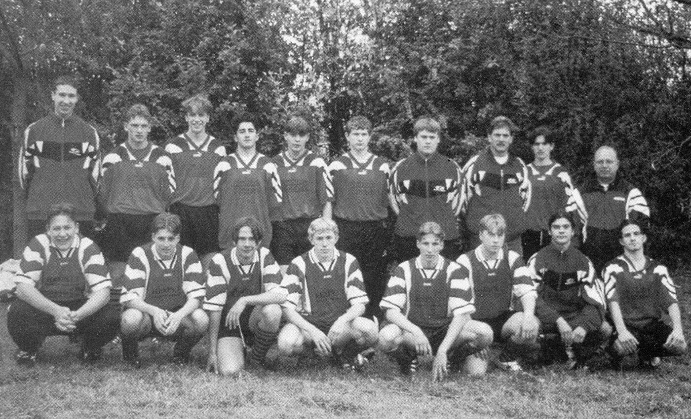

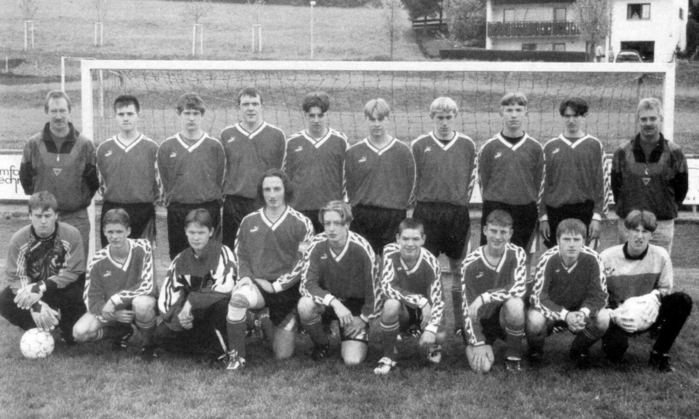

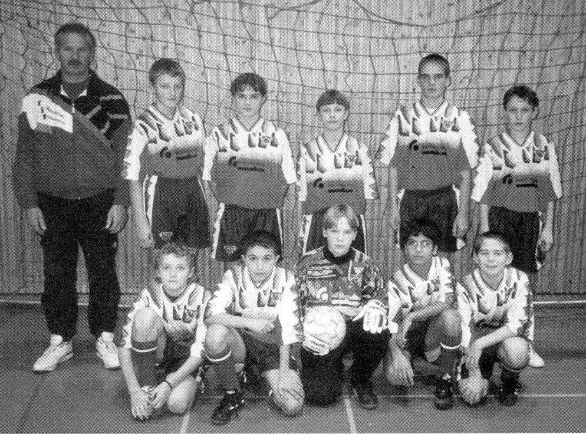

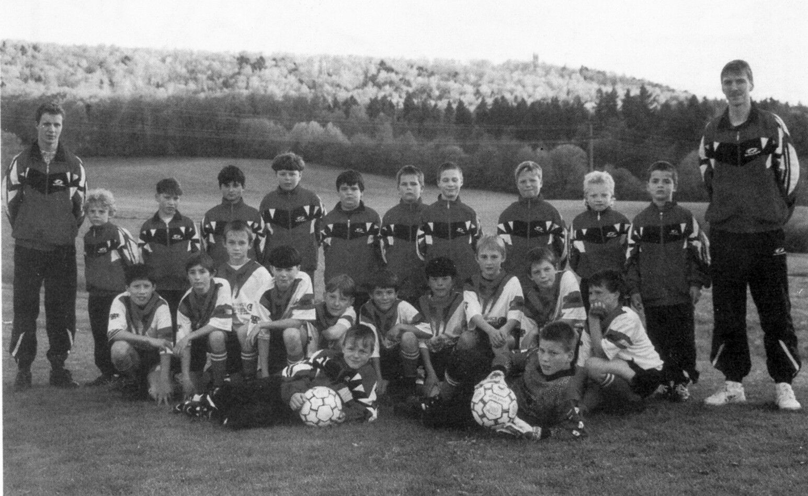

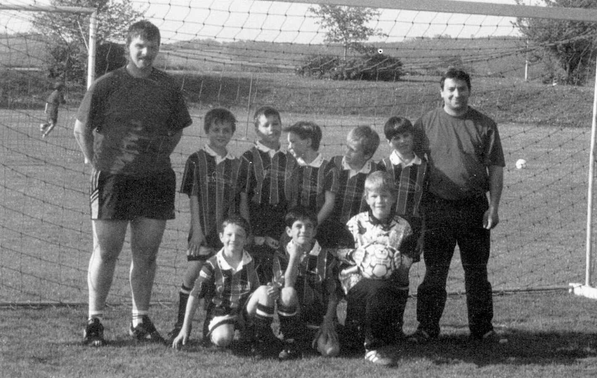

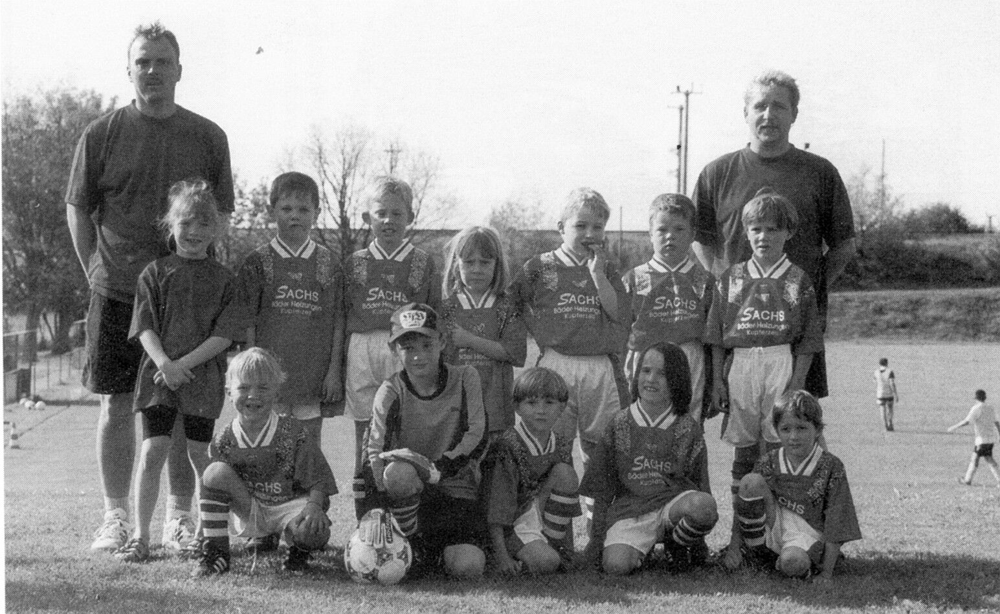
Tischtennis
Zu Beginn der 60er Jahre erkannte der TSV, dass man neben Fußball ein weiteres Standbein benötigte und das sportliche Angebot erweitern musste. Tischtennis erlebte zu jener Zeit einen großen Aufschwung. Deshalb regte im Herbst 1961 Roland Heckelmann die Gründung einer Tischtennisabteilung an. Im Nebenzimmer der „Krone“ in Hessental kam ein kleines Häuflein von acht Personen zusammen, um die neue Sparte aus der Taufe zu heben. Man beschloss unter dem Dach des TSV eine Tischtennisabteilung zu gründen. Gerhard Meiser übernahm die Abteilungsleitung. Der Spielbetrieb konnte jedoch nur „unter Vorbehalt“ aufgenommen werden. Wer wusste schon, ob die Abteilung überhaupt weiter bestehen konnte? Das erste Spiel in Wolpertshausen endete 9:6 für den TSV. Schnell erkannte man aber, dass die neue Sportart weitere Freunde fand. Deshalb konnten schon 1962 zwei Herrenmannschaften und eine Damenmannschaft zum Spielbetrieb angemeldet werden. 1964 übernahm Roland Heckelmann die Abteilungsleitung von Gerhard Meiser.

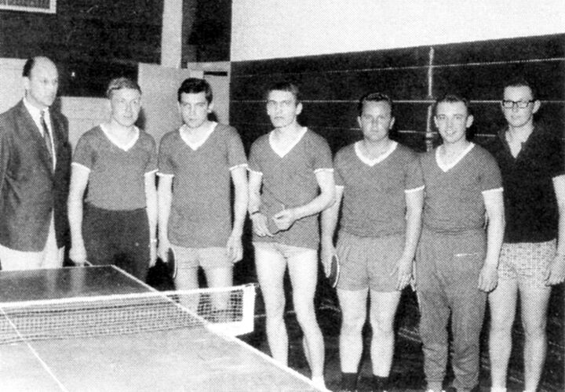

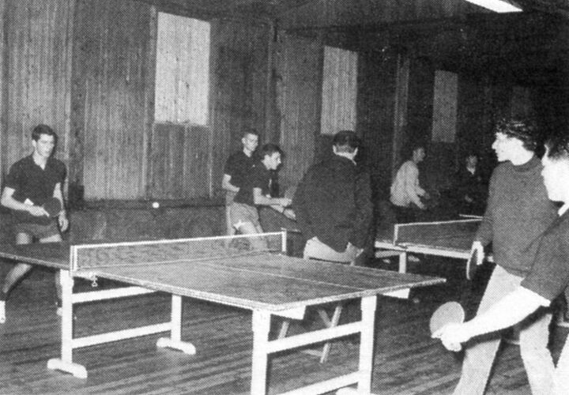

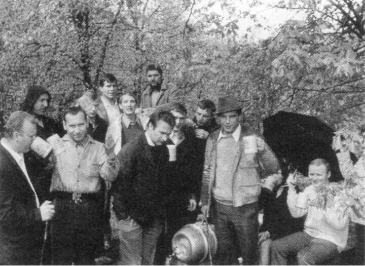

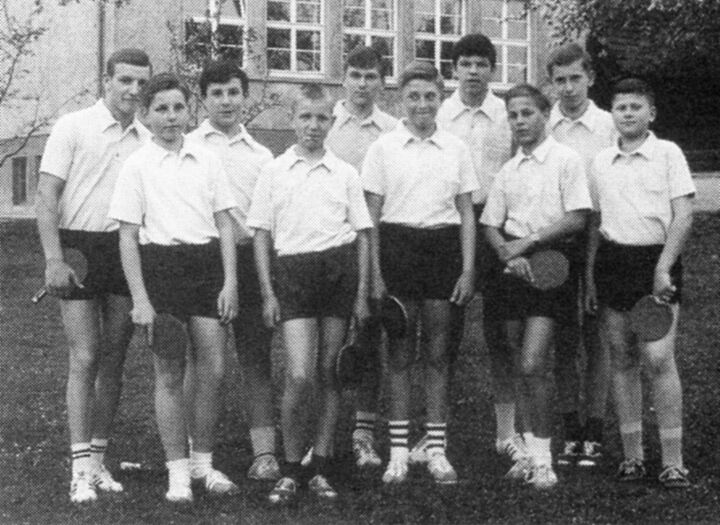
Die Verbandsspiele fanden anfänglich in der alten Baracke neben dem Sportplatz des TSV statt, die 1967 vom „Winde verweht“ wurde. Dies betraf den Tischtennissport jedoch nur mittelbar. Sie war bereits 1964 in die neue Turnhalle an der Grund- und Hauptschule umgezogen. Seit dieser Zeit hatte das Tischtennis verbesserte Spiel- und Trainingsbedingungen. Dies schlug sich in den sportlichen Erfolgen nieder. Sowohl die Damen als auch die Herren errangen zahlreiche Meistertitel und schafften bis 1971 mit den ersten Mannschaften jeweils den Aufstieg in die Landesliga. Während bei den Damen Hessentaler „Eigengewächse“ wie Wilma Gronbach, Ingrid Krämer, Marianne Breuninger und Hanni Dierolf den Erfolg erzielten, wäre bei den Herren der sportliche Erfolg nicht ohne Spielerzugänge aus anderen Vereinen möglich gewesen. Zu dem Hessentaler Spitzenspieler Franz Tomerl scharten sich Jürgen Krämer, Lutz Schiemann und Werner Molitor. Sie bildeten mit anderen Hessentalern eine schlagkräftige Truppe. Viele davon sind noch heute Säulen der Abteilung.

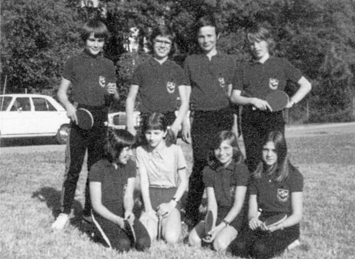

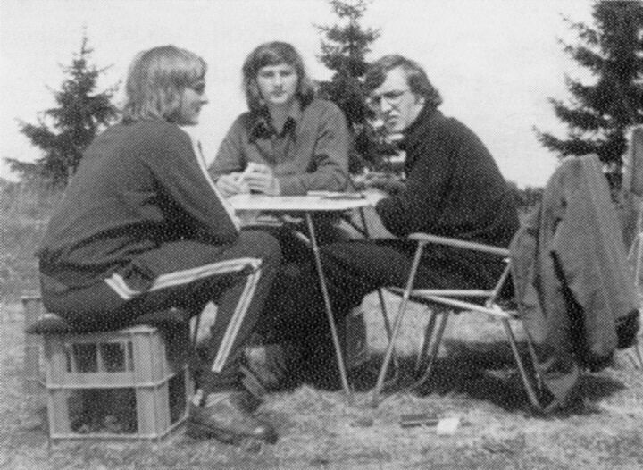

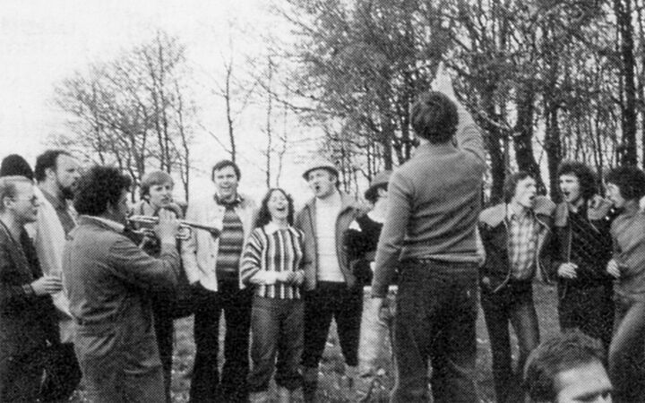
Die Hessentaler Mannschaften waren auch als Partner bei Freundschaftsspielen begehrt und vertraten die Stadt Hall bei Städtevergleichskämpfen. Höhepunkte dabei waren die Begegnungen mit der Haller Partnerstadt Epinal. Die französischen Sportkameraden kamen einige Male nach Hessental. Ebenso oft war man zu Gegenbesuchen in Epinal. Weitere gesellige Veranstaltungen belebten das Vereinsleben: die alljährliche Wanderung am 1. Mai und der Vereinsausflug, der im zweijährigen Turnus die Abteilung in viele Metropolen Europas führte. Auch passive Mitglieder und Freunde der Abteilung nahmen gerne daran teil.
Unter Leitung von Roland Heckelmann, den alle liebevoll „Boss“ nannten, war die TT-Abteilung zu einem festen Bestandteil des Sports in Hall geworden, die auch überregional ein beachtliches Ansehen genoss. Nicht zuletzt auch deshalb, weil sie bei der Ausrichtung von kreis- und bezirksoffenen Stadtmeisterschaften großes organisatorisches Geschick gezeigt hatte. Deshalb übertrug der Württembergische Tischtennisverband die Ausrichtung der Württembergischen Jugendmeisterschaften und der Deutschen Jugendmeisterschaften 1971 der Abteilung. Auch diese Mammutaufgaben, bei der alle Mitglieder bis aufs äußerste gefordert waren, erledigte man mit Bravour.
Gerade die Übertragung der Jugendturniere war auch eine Anerkennung des Verbandes für die hervorragende Jugendarbeit des Vereins. Die „Aktiven“ und die „Jugend“ hatte man organisatorisch bereits 1963 getrennt. Franz Tomerl führte die Jugend bis 1966 und legt den Grundstein, auf dem Eugen Lösch weiter aufbauen konnte.
Das Jahr 1971 war mit der Ausrichtung der überregionalen Meisterschaften und den beiden Mannschaften in der Landesliga organisatorischer und sportlicher Höhepunkt der „Aktiven“. In den folgenden zehn Jahren spielte die erste Herrenmannschaft weiterhin auf hohem Niveau in der Bezirksliga, während die Damenmannschaft in der Landesliga zu einer festen Größe wurde.
1974 übergab Roland Heckelmann, der Motor und Seele der Abteilung war, sein Amt als Abteilungsleiter ab und widmete sich politischen Aufgaben. Er hatte einen würdigen Nachfolger gefunden. Eugen Lösch, der die Jugend bereits zu größeren Erfolgen auf württembergischer Ebene geführt hatte, übernahm nun auch die „Aktiven“. Er legte den Schwerpunkt auf die Jugend, die dadurch einen weiteren Aufschwung erlebte. Sein hohes persönliches Engagement schlug sich insbesondere in der Trainingsarbeit und verschiedenartigen Freizeitaktivitäten nieder, alljährliches Zeltlager auf dem Hüttenhof, Jugendfasching, Weihnachtsfeiern, Schwimmturniere, Ausrichtung einer Jugenddisco und einer Jux-Ralley.

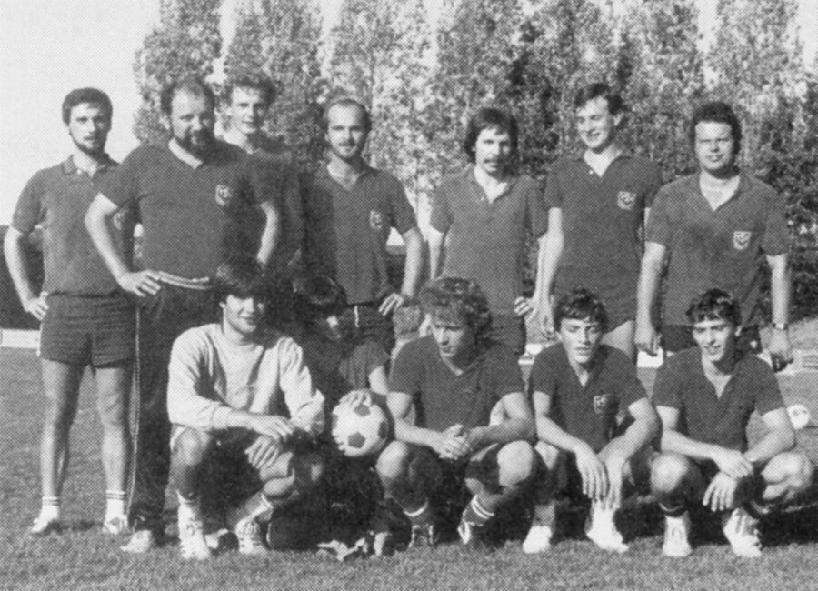
Die Tischtennisabteilung war ein derartiger Anziehungspunkt, dass über hundert Jugendliche Spaß an dieser Sportart fanden. Dies ging sogar so weit, dass die Jugendlichen den „Schuppen“ von Eugen Lösch ausbauten, um auch in den Ferien trainieren zu können. Ein ausgeklügeltes Trainingskonzept unter Einbezug der älteren Jugendlichen als Trainer brachte auch eine starke Spitze hervor. Sowohl die Jungen als auch die Mädchen spielten in der Verbandsliga, der höchsten Spielklasse in Württemberg. Steffen Krämer, der es bis in die Bundesliga schaffte und auch Martin Wagner, der noch heute in der Verbandsklasse spielt, lernten bei uns den perfekten Umgang mit Schläger und Ball. Aber auch viele andere sahnten unter dem Zeichen des TSV reihenweise Pokale, Preise und Meistertitel ab. Damit war Hessental im Kreis, Bezirk und darüber hinaus eine feste Größe.
Die Trainer und Betreuer konnten auf Dauer die vielen Fahrten nicht mehr alleine übernehmen. Die Eltern der Spieler mussten für die Spielbetreuung herangezogen werden. Um auch bei ihnen das Interesse für den TT-Sport zu wecken, richtete man Elternturniere aus und rief das „Elterntraining“ ins Leben. Es existiert noch heute und ist aus dem Leben der Abteilung nicht mehr wegzudenken.
1978 holte Eugen Lösch erneut die Württembergischen Jugendmeisterschaften nach Hessental. Dies war ein würdiger Abschluss der „Ära Eugen Lösch“ als Abteilungsleiter. Schon vorher hatte er das Amt des Jugendleiters an Werner Kalmbach übergeben. Die Abteilung führte nun Klaus Dürr. Unter seiner Regie nahmen Anfang der 80er Jahre bis zu fünf Herren- und vier Damenmannschaften am aktiven Spielbetrieb teil. Die Jugendarbeit setzte Herbert Hanselmann lange Jahre mit hohem persönlichen Engagement fort. Seine Spielerinnen und Spieler errangen viele Erfolge auf Kreis- und Bezirksebene.
Wie in anderen Bereichen, so machte auch die gesellschaftliche Entwicklung vor dem Tischtennissport nicht halt. Neue Sportarten wie Tennis kamen auf. Aber auch das sonstige Freizeitangebot vergrößerte sich und das Ehrenamt geriet in die Krise. Es wurde immer schwieriger, Trainer und Betreuer für den Tischtennissport zu finden. Dies schlug sich auch in der Abteilungsführung nieder. Seit 1981 gab es deshalb mehrere Wechsel. Der zeitraubenden ehrenamtlichen Tätigkeit widmeten sich Otto Windmüller, Franz Tomerl, Werner Molitor, Wilhelm Merz, Robert Merz und Werner Kalmbach. Sie stellten nicht selten Familie und Beruf zeitweise in den Hintergrund um die Abteilung zu führen.
Sportlich gesehen war Hessental zu Beginn der 80er Jahre in Hall noch führend. Martina Bronner war eine der stärksten Spielerinnen im Bezirk und die erste Damenmannschaft spielte bis in die 90er Jahre in der Bezirksliga. Die erste Herrenmannschaft konnte diese Klasse nicht halten, gehört aber seit Jahren zu den Spitzenteams in der Kreisliga, während die Damen in der Bezirksklasse spielen. Hessental nimmt sowohl bei den Damen als auch bei den Herren mit jeweils zwei bis drei Mannschaften teil.
Nach Roland Kalmbach und Helmut Orvat übernahm Martin Berger 1986 das Amt des Jugendleiters. Er stellte die Jugend wieder auf eine breitere personelle Basis und konnte bei vielen ABC-Schützen die Freude fürs Tischtennis wecken. Bald stellten sich auch sichtbare Erfolge ein: Weitere Jugendmannschaften spielten in den jeweiligen Altersklassen und auch bei Turnieren fuhr man manchen Titel ein, ohne jedoch das Niveau der 70er Jahre zu erreichen. Martin Berger wurde von Peter Ehrlich, Robert Merz und Eugen Heinold abgelöst. Unter ihm – mit tatkräftiger Unterstützung von Eugen Lösch – erlebte die TT-Abteilung erst kürzlich einen weiteren großen sportlichen Erfolg: Die Mädchen schafften den Aufstieg in die Verbandsliga und zeigten was gute Hessentaler Schule ist. Dieses Team bildet heute den Kern der ersten Damenmannschaft.
Der Zusammenhalt und das Gesellige, das die Abteilung schon bei ihrer Gründung ausgezeichnet hat, ist noch heute ein festes Bindeglied. Viele sind in der Zwischenzeit eben etwas älter geworden. Doch auch die Jüngeren gehen gerne auf die Vereinsausflüge mit, die nicht mehr im zweijährigen Turnus, sondern neben der Maiwanderung nunmehr jedes Jahr ein fester Bestandteil unseres Vereinslebens sind. Die Abteilung bedankt sich für die Unterstützung vom Hauptverein und der Stadt Schwäbisch Hall. Ferner bei allen, die den Tischtennissport durch eine ehrenamtliche Tätigkeit oder auf andere Weise unterstützen.

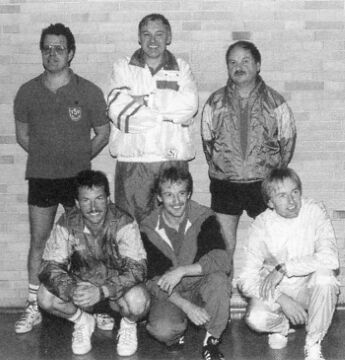

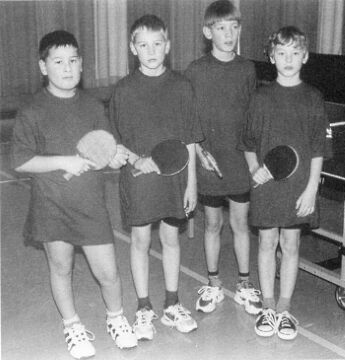
Frauenturnen
Seit vierunddreißig Jahren wird Mittwochs in der Turnhalle der Grundschule Hessental Gymnastik betrieben. Auch wenn von den Gründungsmitgliedern inzwischen nur noch Marianne Bernhardt, Doris Rau und Brigitte Ensinger aktiv dabei sind, hat sich unsere Abteilung im Laufe der Jahre ständig verjüngt und vergrößert.
Es gibt auch für die Seniorinnen der Abteilung noch genügend Gelegenheiten sich am Vereinsleben zu beteiligen, sei es bei unseren Jubiläumsfesten, Ausflügen, Maiwanderungen oder dem monatlichen Kegeln montags im Haller Hof.
1997 feierte unsere „Vorturnerin“ Sonja Schmidt ihr 20-jähriges Jubiläum. Leider war das auch gleichzeitig der Abschied als Übungsleiterin. An dieser Stelle nochmal ein ganz herzliches Dankeschön für diese lange Zeit. Doch bleibt sie uns weiterhin als „normale“ Turnerin erhalten. Wir hatten dennoch großes Glück und konnten Christiane Röhrich als neue Übungsleiterin verpflichten. Sie bringt uns nun jeden Mittwoch von 19:30 bis 20:30 Uhr bei flotter Musik ordentlich in Schwung.


Breitensport
Es war im Sommer 1981, etliche passive Mitglieder fühlten sich für den sportlichen „Ruhestand“ noch zu jung und äußerten den Wunsch, eine Abteilung zu gründen, wo es nicht mehr darum ging, aktiv Wettkampfsport zu betreiben. Der gesundheitliche Wert des Sports sollte vorrangig sein.
Diesem Vorhaben stand die damalige Vorstandschaft aufgeschlossen gegenüber, gleichzeitig fanden neue Mitglieder dadurch auch den Weg zum Verein.
Bei der Gründungsversammlung im „Hirsch“ waren zahlreiche Interessenten vertreten. Für die ersten Übungsabende, über deren Gestaltung man vielleicht noch etwas unsicher war, konnte mit Manfred Franz ein erfahrener Sportlehrer gewonnen werden. Doch bald schon zeigte sich, das die neue Abteilung auf eigenen Füßen stehen konnte.
Schon bei der Gründungsversammlung ließ Gerhard Kümmerer durchblicken, nach einer gewissen Anlaufzeit die sportliche Leitung der Abteilung zu übernehmen. Heute, nach siebzehn Jahren, übt er sein Amt immer noch aus, mit gleichem Elan wie in der Gründungszeit. Sein Ideenreichtum an sportlichen Übungen und Spielen scheint unbegrenzt zu sein.
Vor ein paar Jahren wurde auch in Verbindung mit der AOK eine Rückenschulung durchgeführt, die großen Anklang fand.
Musste man in den ersten Jahren noch in die Schenkenseehalle fahren, steht nun schon seit einiger Zeit die Hessentaler Turnhalle zur Verfügung. Nicht nur auf sportlichem Gebiet wird von der Abteilung viel angeboten, auch die Geselligkeit steht hoch im Kurs, Ausflüge, Grillabende und Fahrradtouren runden das Angebot ab.
Wie überall, so ist auch die Breitensport-Abteilung gewissen Fluktuationen unterworfen. Einige Mitglieder verlor die Abteilung durch den Wegzug von Hessental, dafür kamen wieder neue Mitglieder hinzu. Etwas Sorgen bereitet die Altersstruktur, hat doch inzwischen das älteste Mitglied das Rentenalter erreicht. Von daher wäre es zu begrüßen, wenn jüngere Mitglieder die Abteilung verstärken könnten. Auch Nichtmitglieder sind zu einem „Schnupper-Übungsabend“ stets willkommen.

Kinderturnen
Die Kinderturnabteilung des TSV Hessental ist in drei Gruppen eingeteilt, welche sich einmal wöchentlich in der Turnhalle zum Spielen, Toben und Turnen trifft.
Die Gruppen teilen sich auf in Kleinkinderturnen von 3 bis 6 Jahren mit Sieglinde Erlenbusch mittwochs von 14:30 bis 15:30 Uhr, 1. und 2. Klasse mit Barbara Liewald mittwochs von 15:45 bis 16:45 Uhr und 3. und 4. Klasse mit Susi Rieck dienstags von 17:30 bis 18:30 Uhr.
Mit den insgesamt ca. sechzig Kindern versuchen wir durch Spiele, Turngeschichten, Bewegungslandschaften aus Großgeräten usw. die Phantasie und Kreativität der Kinder anzuregen. Das Kinderturnen ist nicht einseitig auf das Geräteturnen ausgerichtet, sondern versteht sich Sportarten übergreifend, es will dazu beitragen, die natürliche Bewegungsfreude und die Neugier der Kinder zu erhalten.
Viele Aktivitäten begleiten uns durch das Jahr, bei der alljährlichen Winterfeier sind die Kinder mit großer Begeisterung dabei, mit tollen Vorführungen bereichern sie das abwechslungsreiche Programm. Im März diesen Jahres nahmen wir erfolgreich an einem Kinderturn-Cup in Michelfeld teil, zur Belohnung ging es im Anschluss in den vielgewünschten McDonald’s. Außerdem stehen das Jahr über Schwimmbadbesuche, Radfahren und viele andere Dinge an. Im Sommer planen wir einen eintägigen Ausflug, welchen wir durch einen Weihnachtsbasar auf dem Haller Milchmarkt und dem Glühweinstand beim Hessentaler Weihnachtsmarkt teilweise mitfinanzieren.
Also von Langeweile im Kinderturnen keine Spur, wir freuen uns über jedes neue Turnkind – wer Lust hat, schaut einfach mal herein.

Seniorenabteilung
Einige ältere Mitglieder fassten, nachdem beruflicher Alltag und damit verbundener Stress nicht mehr lebensbestimmend waren, 1993 den Entschluss, sich einmal im Monat zu treffen, um etwas Geselligkeit und auch das Zusammengehörigkeitsgefühl neu zu beleben. Auch sollte die Bindung zum Verein erhalten bleiben. Dieses Vorhaben wurde von der Vorstandschaft sehr begrüßt und auch unterstützt. So traf man sich an einem schönen September-Nachmittag 1993 im Vereinsheim und sprach über diesen Plan. Das Interesse war groß, einige Mitglieder spendeten Kaffee und Kuchen.
Die Anwesenden waren sich klar darüber, dass es künftig nicht nur eine Art Kaffeekränzchen oder Stammtischrunde werden sollte. Schon bald wurde ein abwechslungsreiches Programm zusammengestellt, wo für jeden Geschmack etwas dabei war.
Was wurde seit Bestehen der Abteilung nicht schon alles besichtigt, z. B. die Comburg, das Keckenburg-Museum, Wasserkraftwerke, eine Kläranlage, Heizkraftwerke, eine Wasseraufbereitungsanlage, eine Windkraftanlage, alles hier aufzuzählen ist unmöglich. Aber nicht nur Besichtigungen sind es, alljährlich wird Fasching gefeiert, Wanderungen, Grillfeste, Weinproben, Kegelnachmittage, Erlebnisberichte mit Dias aus fernen Ländern und noch vieles mehr wird angeboten.
Bei dieser großen Angebotspalette müßte es fast eine Selbstverständlichkeit sein, gleich nach Erreichen des Rentenalters nichts wie hin zur TSV-Seniorengruppe. Wir freuen uns auch über Interessenten, die noch nicht Mitglied beim Verein sind.

Das Vereinsheim wird gebaut
So lautete die Überschrift in der Festschrift anläßlich des 50-jährigen Bestehen des TSV Hessental.
Hier die Aufzeichnung von damals:
Mit der Herrichtung eines ordentlichen Sportplatzes im Jahre 1964 wurde den Verantwortlichen des TSV klar, dass die Wasch- und Duschanlage und das Vereinsheim im „Barockstil“ bald nicht mehr den Erfordernissen eines modernen Sportbetriebs gerecht werden kann. Hinzu kam, dass an der Baracke Alterserscheinungen auftraten. Besonders zeigte sich das an der Westseite. Es war deshalb notwendig, die Fenster nach dieser Richtung zuzunageln, um die Übungshalle dicht zu halten. Durch den Übungsbetrieb in der Turnhalle verlor auch die hölzerne Übungshalle an Bedeutung. So begann man zu planen und zu sparen, um eine gute Grundlage für einen Neubau zu haben. Die Kassierer zeigten sich als wahre Künstler der Sparsamkeit, die oft genug kritisiert wurde. Das Ansparen wurde dadurch erleichtert, dass die Sportfeste und auch der Betrieb des Vereinsheims durch den selbstlosen Einsatz der Vereinswirte immer etwas einbrachten. Trotzdem fehlte es noch an dem richtigen Anstoß. Dieser kam dann mit unerwarteter Gewalt.
Im Februar 1967 „blies“ ein Sturm das Vereinsheim samt Übungshalle um und zum Teil auch weit weg über den Platz. Nun blieb nichts anderes übrig, als ernstlich an den Bau eines neuen und festen Vereinsheims heranzugehen. Dabei brachte die bei einem Aufbau zu erwartende Entschädigung für den Sturmschaden eine nicht unbedeutende Verbesserung der finanziellen Voraussetzungen.
Wer nun glaubte, dass es „ruck zuck“ gehen werde und ein neues Vereinsheim steht, sah sich allerdings enttäuscht. Es stellten sich nämlich Schwierigkeiten ein, die die Begeisterung und den Mut für das „Neue“ dämpfen mussten. Daran konnten auch nicht die Beispiele bei Nachbarvereinen viel ändern. Zwar sagte sich mancher, was die können, das geht bei uns schon zweimal. Man hört aber auch, wie dort nach anfänglicher Begeisterung und einer Vielzahl von Helfern zuletzt Resignation eintrat, weil die Arbeit nur noch von wenigen geleistet wurde, als die Hauptarbeit erledigt war.
Schon immer lag die Stromversorgung des Vereinsheims im argen, so dass zunächst auch nicht an eine Platzbeleuchtung zu denken war. Die Stromzufuhr kam von der Bundesbahn, die wegen der zu schwachen Zuleitung einfach nicht mehr Strom liefern konnte, selbst wenn sie es gewollt hätte. Sie musste auch die Versorgung aufkündigen, als die Gleisanlagen neu hergerichtet wurden, was schon im Hinblick auf eine Elektrifizierung der Bahnstrecke geschah. Endlich gelang es dann, die Verhandlung mit der Firma Heller & Co. zu einem Abschluss zu bringen und eine ausreichende Stromversorgung sicherzustellen. Die Kosten dafür waren jedoch außerordentlich hoch.
Nunmehr konnte auch für den oberen Platz eine Beleuchtung errichtet werden. Während die Wasserversorgung von Anfang an gesichert war, weil gleich zwei Wasserfernleitungen im oberen Platz liegen, wovon eine angezapft werden konnte, wurde die Abwasserbeseitigung zu einem umso größeren Problem. Es fehlte die Möglichkeit, mit erträglichen Kosten einen Anschluss an das Abwassersystem der Stadt Schwäbisch Hall herzustellen. Der Bahndamm, der schon für die Stromversorgung ein nur mit erheblichen Mehrkosten zu überwindendes Hindernis dargestellt hatte, war für eine Abwasserleitung praktisch unüberwindlich. Solange aber die Abwasserbeseitigung nicht gesichert war, konnte die Planung für das Vereinsheim nicht vollendet werden.
Ein Durchbruch gelang hier erst, als unser viel zu früh verstorbenes Mitglied, Herr Architekt Eugen Scheuermann, die Planung in die Hand nahm. Sie wurde dann noch im Jahre 1970 fertig und noch im Herbst des gleichen Jahres konnte mit der Verlegung der Kläranlage und des Abwasserkanals begonnen und vor Einbruch des Winters beendet werden.
Es lagen zu diesem Zeitpunkt schon die Zusagen der Stadt Schwäbisch Hall und der Löwenbrauerei Schwäbisch Hall vor, den Bau mit beträchtlichen Zuschüssen zu fördern. Ebenso konnte mit staatlichen Mitteln aus den Toto- und Lottogeldern gerechnet werden, wenn auch erst nach Erreichung eines gewissen Abschlusses der Bauarbeiten.
Nachdem auch freiwillige und kostenlose Mitarbeit von sachkundigen Vereinsmitgliedern zugesagt waren, fehlte nur noch ein Mann, der die Initiative ergriff. Hier waren es die Sportkameraden Erich Brucker und Horst Gentner, die die notwendigen Impulse gaben. Dabei wurde Horst Gentner, ohne das er es wohl selbst wollte und es vielleicht auch zu spät merkte, der Motor schlechthin. Es kann an dieser Stelle gesagt werden, dass ohne ihn der im Frühjahr 1971 begonnene Bau nicht so schnell Gestalt angenommen hätte. Er hätte dann auch nicht schon seit Frühjahr 1972 wenigstens teilweise benutzt und jetzt auch offiziell eingeweiht werden können.
Durch geschicktes Verhandeln mit Zulieferfirmen und Handwerkern konnten die genannten Sportkameraden außerordentlich günstige Preise erzielen. Dabei stieß man auf großes Verständnis für die Belange des TSV Hessental. Es wurden so erhebliche Kosten gespart. Horst Gentner war es dann, der durch vorbildlichen und selbstlosen Einsatz immer wieder Sportkameraden und auch Freunde des Vereins fand, die mit ihm entweder kostenlos unter persönlichen Opfern oder gegen eine erträgliche Vergütung mitarbeiteten. Was hier geleistet wurde und was hierdurch gespart werden konnte, kann nur der ermessen, der die Höhe des Kostenvoranschlags und den tatsächlichen finanziellen Aufwand für den Bau kennt. Zwar können noch keine endgültigen Zahlen gesagt werden. Es sind aber „zig-Tausende“, die hierdurch gewonnen wurden. Bis Ende 1972 wurden über 6500 Arbeitsstunden für den Bau von Vereinsmitgliedern und Freunden geleistet. Das meiste geschah in eigener Regie, anderes unter der Anleitung von Handwerkern. Daneben mussten viele Stunden für die Planung, die Verhandlungen mit allen möglichen Stellen und für unproduktive aber notwendige Nebenarbeiten geopfert werden.

Dass bei einem solchen Werk nicht alles glatt ging, wie es nach diesem Bericht den Anschein hat, wissen die Eingeweihten und andere werden es sich denken können. Nach der Vollendung des Werks zählen diese Schwierigkeiten nicht mehr, sie machen aber das Werk nur umso bewundernswerter. Deshalb sieht es der TSV Hessental als eine hohe Verpflichtung an, den Männern, die sich dabei besonders hervorgetan haben, im Rahmen der offiziellen Einweihung, wie sie für den 15. Juni 1973 vorgesehen ist, Dank und Ehrung zukommen zu lassen. Es werden auch die Männer von außerhalb des Vereins, die das Werk förderten, und die Repräsentanten unseres Gemeinwesens zu dieser Feier geladen werden. Es wird dabei ohnehin eng genug im Vereinsheim zugehen, so dass für Zuschauer, wie schon beim Bau, kein Platz bleibt.
Viele Firmen haben uns anlässlich unseres 75-jährigen Jubiläums durch ihre Inserate unterstützt. Nur dadurch war es möglich, diese Festschrift zu erstellen. Wir danken dafür ganz herzlich.
Vielen Dank auch all denen, die mich durch ihre Recherchen und Aufzeichnungen unterstützt und diese Festschrift mit „Leben“ gefüllt haben. Viel Arbeit und Verzicht auf Freizeit steckt hier dahinter. Das Ergebnis all dieser Arbeit halten Sie, liebe Leser, heute in den Händen.
Viel Spaß beim Lesen
Wolfgang Kurz
Festausschuss